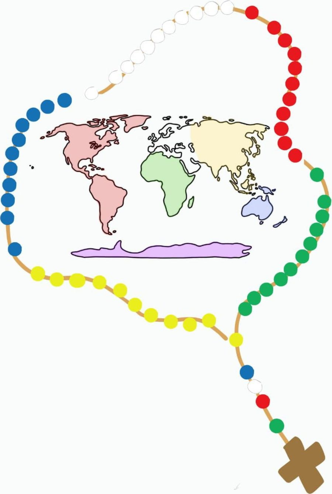

LEMA DE LA MAJ
Uno en Cristo,
unidos en Misión
Esto es lo que preparamos para acompañarlos: las oraciones, los patronos, su zona y los teléfonos que puedan hacer falta.
Guardalo en el teléfono antes de salir. Después funciona sin señal.
Uno en Cristo,
unidos en Misión
Padre santo, concédenos ser uno en Cristo,
arraigados a su amor que une y renueva. Haz
que todos los miembros de la Iglesia estén
unidos en la misión, dóciles al Espíritu Santo,
valientes en dar testimonio del Evangelio,
anunciando y encarnando cada día tu amor
fiel por cada criatura.
Bendice a los misioneros y misioneras,
apóyalos en su esfuerzo, presérvalos en la
esperanza.
María, Reina de las misiones, acompaña
nuestra labor evangelizadora en todos los
rincones de la tierra; haznos instrumentos de
tu paz y haz que el mundo entero reconozca
en Cristo la luz que salva.
AMÉN.
Oh Espíritu Santo amor del
Padre y del Hijo, inspírame
siempre lo que debo pensar, lo
que debo decir, como debo
decirlo, lo que debo callar,
cómo debo actuar, lo que debo
hacer para Gloria de Dios,
bien de las almas y
mi propia santificación.
Amén.
Oh Señora mía, oh Madre mía,
yo me ofrezco todo a ti. Y en prueba de mi
filial afecto, te consagro en este día mis
ojos, mis oídos, mi lengua y corazón. En
una palabra, todo mi ser. Ya que soy
todo tuyo, oh madre de bondad,
guárdame, defiéndeme y utilízame como
instrumento y posesión tuya.
Amén.
Señor Jesús, gracias por
habernos permitido llevar tu
Palabra a quienes hemos
visitado. Ponemos en tus manos
sus peticiones y necesidades,
para que tu amor transforme
sus vidas. Bendice a cada
misionero y fortalécenos en la
fe. Que María, nuestra Madre,
nos siga acompañando y
guiando con su amor.
Amén.
Señor Jesús, tú viviste treinta años en el
hogar de Nazaret donde junto a José y
María formaste una familia, imagen de la
Santísima Trinidad. Hoy te venimos a pedir
que bendigas esta familia con tu presencia.
Bendice cada uno de sus integrantes (los
nombramos). Transfórmala en una “pequeña
iglesia doméstica”, donde reine la paz, el
amor y la alegría que tú trajiste al mundo.
Te lo pedimos por la intercesión de María
Santísima, Madre y Reina nuestra, a ti que
vives y reinas por los siglos de los siglos.
Amén.
Hoy, Señor, te doy gracias por esta familia.
Gracias por la vida de cada uno de sus
integrantes. Por sus vidas y testimonios que
son la mejor reserva de paciencia, sabiduría
y amor. Ayúdalos, Señor, a crecer en el amor
y repartirlo, a crecer en experiencia y
compartirla. Conserva esta familia y las
familias de todo el mundo unidas en el
amor, para que entre todas construyamos un
mundo de paz y solidaridad.
Amén.
Señor Jesús, Tú tienes un cariño muy especial
por los enfermos. En tu Evangelio apareces
sanando y consolando, fortaleciendo y
perdonando a muchos enfermos graves.
Ten comprensión de esta familia, tan
preocupada por la salud de… (aquí se nombra
al enfermo), dale a él paciencia en su
enfermedad y si es para mayor bien de esta
familia y mayor gloria tuya, alivia sus
dolores y molestias y sánalo(a) lo más pronto
posible.
Te lo pedimos por intercesión de María, la
Madre de Jesús. Amén.
Señor, sabemos que Tú comprendes la
turbación de nuestro corazón, esperas
nuestras preguntas y nos escuchas con
mucha paciencia y misericordia. Ayúdanos,
pues, a comprender la respuesta que nos das
en la Cruz de tu Hijo amado. Danos
profunda fe para aceptar el secreto de tu
mano poderosa, abre nuestro corazón a la
Esperanza, pues tanto nos has amado que
nos entregaste a tu propio Hijo, nuestro
Hermano, Amigo y Señor, Jesucristo. Que
podamos sentir el abrazo y consuelo de
Nuestra Madre María.
Amén.
Señor Jesús. Tú dijiste a tus discípulos que no
les dejarías huérfanos, sino que les regalarías
la presencia del Espíritu Santo dado por el
Padre a los que crean en ti.
Tú mismo vienes con tu Palabra a visitarlos.
Tu Espíritu Santo ha sido derramado en sus
corazones. Te pedimos que ninguno de los que
viven en esta casa se sientan solos y
abandonados. Acrecienta la unidad de esta
familia que tú tanto quieres y haz que todos
se sientan amados y respetados por ti y por
los tuyos.
Amén.
Oh, Dios nuestro, que con tu Providencia
amorosa sostienes y guías toda la creación,
concede a esta familia la gracia de
conseguir prontamente trabajo, que sea
honesto, digno y estable; y que, luego, le
ayudes a ver la tarea laboral como un
camino de santificación, realizándose con
amor y en servicio a los demás, encontrando
al Padre Dios en todas las horas, imitando a
Jesús y a José cuando trabajaban en su
taller de Nazaret. Te lo pedimos por
Jesucristo, nuestro Señor.
Amén.
Te agradecemos, Señor, la acogida que nos
ha brindado esta familia.
Tú despiertas en nosotros un gran respeto
por todos los que buscan la verdad y
nosotros creemos que Tú eres la verdad. Te
pedimos por todos los miembros de esta
familia, para que siempre los alientes en su
camino y descubran en Ti al Señor de la
Vida.
Tú eres la Vida y el Amor. Que quede en ellos
tu paz.
Amén.
No hay ninguna oración con esas palabras.
Este fuego misionero nos
convoca ya
Que todos seamos uno
como vos nos enseñas
El mundo necesita valientes
testigos de tu amor
Habla Señor que tu siervo
escucha enciende mi
corazón
Unidos en Cristo,
misioneros siempre listos,
preparados para la misión
(su amor nos une y
renueva)
De la mano de María,
donde necesiten su amor
A Jesús Sacramentado lo
quiero llevar
Anunciarlo a mis hermanos
sedientos de su paz
Queremos ser un rosario
viviente
con cada don que das
Poder verte en el hermano,
sé que en el estás
Unidos en Cristo,
misioneros siempre listos,
preparados para la misión
(su amor nos une y
renueva)
De la mano de María,
donde necesiten su amor
Como los discípulos y su
amor puesto en acción
Como hermanos todos
unidos en Cristo a la misión
Unidos en Cristo,
misioneros siempre listos,
preparados para la misión
su amor nos une y renueva
De la mano de María,
donde necesiten su amor
Cada continente de la misión tiene un santo que lo acompaña. Tocá cada uno para leer su historia.
Nació el 15 de marzo de 1831 en Limone sul Garda, Italia, en una familia humilde de campesinos. Sus padres eran profundamente creyentes y le transmitieron una fe muy fuerte.
De joven se trasladó a Verona para estudiar en el Instituto de don Nicola Mazza. Allí descubrió su vocación sacerdotal y conoció la realidad de África a través de los misioneros que regresaban de ese continente.
En 1854 fue ordenado sacerdote y en 1857 realizó su primer viaje misionero a África Central. Llegó a Jartum, en el actual Sudán, después de cuatro meses de viaje. Se encontró con enfermedades, pobreza, hambre, un clima durísimo y la muerte de varios de sus compañeros.
Por motivos de salud tuvo que volver a Europa, pero no abandonó su sueño: en 1864 elaboró un proyecto nuevo, resumido en una frase que lo definió.
Para Comboni los africanos no debían ser solo personas que recibieran la evangelización: quería formar sacerdotes, catequistas y religiosos africanos para que ellos mismos pudieran anunciar el Evangelio. En 1867 fundó los Misioneros Combonianos y en 1872 las Hermanas Misioneras Combonianas.
En 1877 fue nombrado Vicario Apostólico de África Central y consagrado obispo. Realizó su último viaje en 1880 y murió en Jartum el 10 de octubre de 1881, a los 50 años, entre las personas a las que había dedicado su vida.
Fue beatificado por Juan Pablo II en 1996 y canonizado por él mismo el 5 de octubre de 2003. Su fiesta se celebra cada 10 de octubre.
Comboni nos enseña que ser misionero no significa solamente ir a un lugar lejano, sino estar dispuesto a entregar la propia vida al servicio de los demás.
«Salvar África con África».
FE · MISIÓN · ENTREGA · PERSEVERANCIA
Nació el 20 de abril de 1586 en Lima, Perú. Su nombre de nacimiento era Isabel de Flores, pero desde pequeña comenzaron a llamarla Rosa por su gran belleza. Desde muy chica tuvo una relación profunda con Dios.
A los cuatro años aprendió a leer por sí misma y, al conocer la vida de los santos, quedó admirada por Santa Catalina de Siena, a quien tomó como modelo espiritual.
Sus padres querían que se casara, pero ella decidió permanecer soltera y consagrar su vida a Jesús. A los 20 años ingresó en la Tercera Orden de Santo Domingo.
Tenía un corazón especialmente atento a quienes sufrían. En su propia casa preparó una habitación para atender a enfermos, niños pobres, indígenas y ancianos necesitados. Así entendió que amar a Dios también significaba cuidar a quienes más necesitaban ayuda.
Murió en Lima el 24 de agosto de 1617, cuando tenía solamente 31 años. Su muerte causó una enorme conmoción entre los habitantes de la ciudad, que ya la consideraban santa.
Fue canonizada en 1671 por el papa Clemente X, convirtiéndose en la primera persona nacida en América en ser canonizada, y fue proclamada patrona principal del continente.
Santa Rosa nos enseña que la santidad no depende de hacer cosas extraordinarias, sino de aprender a amar profundamente a Dios y poner ese amor al servicio de los demás. Vivió en su propia casa, con su familia, trabajando y ayudando, pero hizo de toda su vida una misión.
ORACIÓN · ENTREGA · SERVICIO · AMOR · SANTIDAD
Nació el 3 de mayo de 1991 en Londres, Inglaterra. Desde muy pequeño mostró un amor especial por Jesús, la Virgen María y la Eucaristía.
A los 7 años hizo su Primera Comunión y desde entonces comenzó a asistir a Misa con mucha frecuencia. Para él, la Eucaristía era su encuentro más importante con Jesús.
Una de las cosas que lo hacían especial era su pasión por la informática. Aprendió a usar computadoras desde muy chico y descubrió que podía usar la tecnología para algo mucho más grande: evangelizar. Creó un sitio web donde recopiló información sobre milagros eucarísticos ocurridos en distintos lugares del mundo.
Tenía una gran sensibilidad hacia quienes sufrían: ayudaba a compañeros con dificultades, defendía a quienes eran víctimas de burlas y compartía sus cosas con personas necesitadas.
Aunque tenía muchos talentos, llevaba una vida sencilla. Le gustaba el fútbol, los videojuegos, los animales y pasar tiempo con sus amigos. Comprendía que la tecnología podía ser algo bueno, pero que no debía dominar su vida.
En octubre de 2006, con apenas 15 años, enfermó de leucemia. Su enfermedad avanzó rápidamente y la afrontó con una gran confianza en Dios. Murió el 12 de octubre de 2006 en Monza, Italia.
Fue beatificado el 10 de octubre de 2020 en Asís y canonizado el 7 de septiembre de 2025 por el papa León XIV, convirtiéndose en uno de los santos más jóvenes de la Iglesia contemporánea.
Carlo nos invita a descubrir que la santidad también es posible en la vida cotidiana: siendo jóvenes, teniendo amigos, disfrutando de lo que nos gusta y poniendo nuestros talentos al servicio de los demás.
«La Eucaristía es mi autopista hacia el cielo». «No yo, sino Dios».
EUCARISTÍA · MISIÓN · TECNOLOGÍA · AMOR · SANTIDAD
Nació el 12 de julio de 1803 en Cuet, Francia, en una familia humilde de campesinos. Durante su infancia trabajó como pastor y, gracias a la influencia de un sacerdote de su pueblo, descubrió su vocación religiosa. Fue ordenado sacerdote en 1827.
Sentía un gran deseo de anunciar el Evangelio donde todavía no se conocía a Jesús. Cuando surgió la oportunidad de participar en una misión en Oceanía, no dudó en ofrecerse. El 24 de diciembre de 1836 partió desde Francia rumbo a las islas del Pacífico y, tras un largo viaje, llegó a la isla de Futuna.
Su misión era anunciar el Evangelio a un pueblo que tenía sus propias creencias, costumbres y tradiciones. Pedro ayudaba a los enfermos, atendía a los pobres y acompañaba a las familias: su manera de evangelizar no se basaba solo en las palabras, sino en el ejemplo de su propia vida.
La evangelización no fue sencilla. Tuvo que enfrentar la oposición de algunos líderes locales, que veían el cristianismo como una amenaza. A pesar de las dificultades, continuó anunciando el Evangelio.
El 28 de abril de 1841 fue asesinado en Futuna. Tenía solamente 37 años. Su muerte no significó el final de la misión: después de su martirio, muchas personas de Futuna comenzaron a acercarse al cristianismo y la fe se extendió por toda la isla. Fue recordado como el primer mártir de Oceanía.
Fue beatificado por el papa León XIII en 1889 y canonizado el 12 de junio de 1954 por el papa Pío XII.
Pedro Chanel nos enseña que ser misionero no significa solamente viajar a lugares lejanos, sino también aprender a conocer, amar y acompañar a las personas. La misión no siempre es fácil, pero cada gesto de amor, cada palabra de esperanza y cada servicio realizado con fe pueden transformar la vida de los demás.
FE · SERVICIO · PERSEVERANCIA · ENTREGA
Nació el 26 de agosto de 1910 en Skopie. Su nombre era Anjezë Gonxhe Bojaxhiu y pertenecía a una familia de origen albanés. Creció en un hogar donde la fe y la solidaridad con los más necesitados eran muy importantes.
A los 18 años sintió el llamado de Dios y decidió ingresar a la congregación de las Hermanas de Loreto, en Irlanda. Poco después fue enviada a la India. En 1929 llegó a Darjeeling y más tarde a Calcuta, donde trabajó como maestra en una escuela para niñas.
En 1946, durante un viaje en tren, experimentó lo que describió como una profunda llamada de Jesús a servir a los más necesitados. En 1948 salió a las calles de Calcuta para acompañar y ayudar a las personas más vulnerables.
En 1950 fundó la congregación de las Misioneras de la Caridad, dedicada al servicio de los pobres, los enfermos, los huérfanos y las personas en situación de abandono. Con los años su obra se extendió por distintos países del mundo.
En 1979 recibió el Premio Nobel de la Paz por su trabajo en favor de las personas más pobres y necesitadas.
Falleció el 5 de septiembre de 1997 en Calcuta, India. Fue beatificada en 2003 por Juan Pablo II y canonizada el 4 de septiembre de 2016 por el papa Francisco.
Nos enseña que la misión no consiste solamente en viajar a lugares lejanos, sino en reconocer a Jesús en cada persona que necesita ayuda, compañía o una palabra de amor.
«No todos podemos hacer grandes cosas, pero sí podemos hacer pequeñas cosas con gran amor».
ORACIÓN · SERVICIO · HUMILDAD · AMOR
El objetivo del Misionero es
ser instrumento de Dios para
encontrarse y encontrarnos con El.
Invocar al Espíritu Santo en nuestro camino a la misión, pedirle por un corazón como el de Jesús Ileno de amor, misericordia y compasión hacia los demás, que el sea quien interceda por nosotros
Un saludo cordial y una presentación adecuada ayuda a generar un ambiente de confianza
Buen dia, buenas tardes, de donde soy, a que se debe mi visita, etc.
Conocer a la persona/ familia crea una base solida para una relación significativa y un dialogo fluido Edad/ estudios/ trabajos/oficios/ hobbies/ gustos
Compartir tiempo y experiencias con la familias y con el otro , el compartir tiene que ser de una manera bidireccional lo que nos ayudara a establecer confianza con ellos. Compartir como vivir la fe en la vida cotidiana puede ser un gran aliento
Cuando un misionero escucha con el corazon transmite una actitud de amor y compasión. Es muy importante una escucha atenta para poder adaptar un mensaje de Fe mas significativo para la persona
Llega el momento de dejarles un mensaje de Fe, de esperanza, de amor, compartir en familia alguna cita bíblica, poder rezar juntos, evangelizar al modo de Jesús hablando con el otro.Se pueden realizar gestos misioneros, como dejarles agua bendita, bocaditos, bendecir casas, entre otros.
Dejarle la información a familias sobre misas/ talleres y cualquier otra información para que ellos puedan acercarse en base a sus tiempos.
Un corazón agradecido, es un corazón con amor, dar las gracias por abrir las puertas de su hogar y de sus vidas. Recordarles que pueden contar ustedes y con la comunidad para apoyarse en el camino de la Fé
TE DEJAMOS ESTOS PEQUEÑOS TIPS PARA
QUE LLEVES A CABO TUS MISIONES
El encuentro con el otro se basa en la escucha y en la compañía ,muchas veces más que una palabra de aliento nos piden un oído para poder descargarse , aprendamos a escuchar con el corazón, seamos pacientes, amables y educados.
TE DEJAMOS ESTOS PEQUEÑOS TIPS PARA
QUE LLEVES A CABO TUS MISIONES
A la hora de salir a misionar, pedile a Jesús que tus ojos sean los de Él, para tener una mirada comprensiva y amable, pedile que tu boca sea la de Él para transmitir palabras de paz y amor y pedile que tus oídos sean los de El para escuchar con paciencia y amabilidad
TE DEJAMOS ESTOS PEQUEÑOS TIPS PARA
QUE LLEVES A CABO TUS MISIONES
Mientras vas a destino, anda de forma alegré transmitiendo la buena noticia pero siempre concentrado en lo que vas hacer y con quien te vas a encontrar, que las cosas externas de la misión no te saquen de foco de lo que estás por hacer
TE DEJAMOS ESTOS PEQUEÑOS TIPS PARA
QUE LLEVES A CABO TUS MISIONES
Muchas veces nos vamos a topar con situaciones que no nos abren o no se encuentran en el hogar, que eso no sea motivo de desgano, sino que impulse un momento de oración entre patrullas ya sea para la casa a la que fueron como así también para las familias que viven ahí
TE DEJAMOS ESTOS PEQUEÑOS TIPS PARA
QUE LLEVES A CABO TUS MISIONES
La misión no termina una vez que salimos de las casas o nos quedamos sin casas para misionar, después sigue una misión personal entre nuestro mismo grupos, para así poder compartir y retroalimentarnos de los frutos de la misión
El Rosario Misionero es una forma de oración que toma como base el Rosario tradicional, en la cual, por intercesión de María, se pide al Padre por las intenciones y necesidades de todo el mundo. Es una oración mariana, universal y misionera.
Consiste en rezar los cinco misterios de cada día teniendo presentes los cinco continentes, pensando en la situación concreta de cada uno desde el punto de vista de la evangelización y de la presencia cristiana, y orando por los misioneros y misioneras, por todos los agentes de la evangelización, y por todos los que aún no conocen la Buena Nueva de la salvación, para que se abran a la luz del Evangelio.

El color verde nos recuerda las verdes selvas habitadas por nuestros hermanos africanos.
El color rojo simboliza la sangre derramada por los mártires que dieron su vida durante la evangelización de este continente.
El color blanco nos recuerda el color de las vestiduras del Papa, que tiene en este continente su sede.
El color azul nos habla de Oceanía, con sus miles de islas esparcidas en las azules aguas del Océano Pacífico.
El color amarillo nos trae a la memoria el continente asiático.
Esta sección todavía no tiene contenido cargado.
Para ver tu zona con las calles y tu propia ubicación, sin señal. Unos 10 MB, se descargan una sola vez.
Los colores de la lista son los mismos que están dibujados sobre la foto del mapa. Cada lugar tiene su enlace para abrirlo en Google Maps. Esos enlaces necesitan señal; las fotos de acá quedan guardadas en el teléfono.
ÁFRICA (1, 2 y 3) y AMÉRICA 3
María Reina de la Paz
Punto de encuentro Escuela José María de los Ríos — almuerzo, talleres y misa.
Referente de misión Belu Mattar, Mariano Molina
Referente de logística Federico Escudero
Almuerzan en el lugar 71 personas
EUROPA, patrullas 1 y 2
Sagrado Corazón de Jesús y La Merced
Punto de encuentro Capilla La Merced o la escuela — almuerzo y talleres.
Referente de misión Caro Cáceres
Referente de logística Nicolás Jofré
Almuerzan en el lugar 36 personas
EUROPA, patrullas 2 y 3
Capilla Jesús Misericordioso, en Raúl Gómez
Punto de encuentro Capilla Jesús Misericordioso — almuerzo y talleres.
Referente de misión Nahuel
Referente de logística: sin datos todavía.
Almuerzan en el lugar 20 personas
AMÉRICA, patrulla 2
Sin patrono. En la escuela está la Virgen de Lourdes.
Punto de encuentro El playón del barrio. Si hay viento, la escuela, a 1,5 km.
Referente de misión Santi Ortega
Referente de logística Fernando Aciar
Almuerzan en el lugar 22 personas
ASIA, patrullas 1, 2 y 3
Virgen de Guadalupe
Punto de encuentro Capilla de Guadalupe — almuerzo. Tiene playón grande y 3 baños.
Referente de misión Juan Salinas, Guada Fuentes
Referente de logística Mirko Ghastin
Almuerzan en el lugar 55 personas, 2 celíacos
AMÉRICA, patrulla 1
San Isidro Labrador
Punto de encuentro Capilla San Isidro Labrador — almuerzo. Talleres en la plaza del barrio.
Referente de misión Lourdes Barboza
Referente de logística Analía Gómez, Emilia López
Almuerzan en el lugar 21 personas
OCEANÍA, patrullas 1, 2, 3, 4.1 y 4.2
Se inaugura la gruta de San Carlo Acutis.
Punto de encuentro Comedor Esperanza — almuerzo con gazebos. La misa es afuera.
Referente de misión Emanuel Cortez, Delfina Clavel
Referente de logística Riveros Javier
Almuerzan en el lugar 90 personas, 7 niños, 1 celíaco, 2 vegetarianos
Esta sección todavía no tiene contenido cargado.
Estos números son nacionales y funcionan sin conexión a internet.